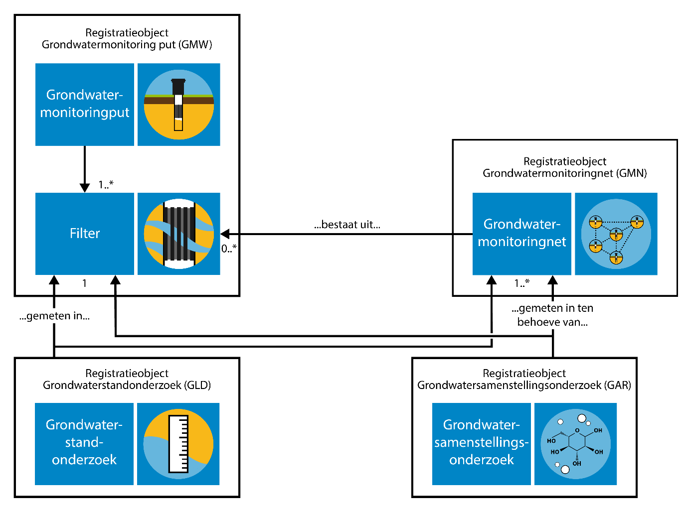

Dit is een experimenteel document waarvan de inhoud onvolledig is, incorrect kan zijn en op elk moment kan wijzigen.
Het is slechts geproduceerd om tooling voor BRO standaarden te testen. Hoofdstuk vijf is automatisch gegenereerd uit
een UML model dat nog in ontwikkeling is.
Inleiding
Deze documenten hangen samen zoals hieronder afgebeeld.
TODO afbeelding opnemen
Samenhang tussen documentatie
Naast deze documenten is er een document dat het systeem van de BRO als geheel beschrijft met als titel BRO-architectuur. In dat document wordt het ontwerp en de algemene werking van de BRO beschreven. Het document BRO-architectuur is alleen nog in een eerste en prille versie beschikbaar.
Leeswijzer
TODO Hier komt tekst ...
Grondwatermonitoringnet
Grondwatermonitoring
Grondwater is een belangrijke bestaansbron. Het grondwater wordt daarom in Nederland in de gaten gehouden en beheerd. Het beheer van het grondwater richt zich op de hoeveelheid bruikbaar grondwater en de kwaliteit ervan. Om dit beheer goed te kunnen uitvoeren, wordt in Nederland de toestand van het grondwater over langere tijd gevolgd. Dat heet grondwatermonitoring. Er wordt daarbij gekeken naar de grondwaterstand (kwantiteit), en naar de samenstelling van het grondwater (kwaliteit). Hiervoor worden periodiek grondwaterstandonderzoeken en grondwatersamenstellingsonderzoeken uitgevoerd.
In het domein grondwatermonitoring staan de grondwatermonitoringnetten centraal die zijn ingesteld om het grondwater in Nederland te kunnen beheren. Het doel waarvoor een monitoringnet is ingesteld, het monitoringsdoel, beperkt zich in veel gevallen tot kwantiteit of kwaliteit, maar het komt ook voor dat onderzoek aan zowel de kwantiteit als de kwaliteit wordt gedaan binnen hetzelfde grondwatermonitoringnet.
Grondwatermonitoring houdt in dat de toestand van het grondwater in een bepaald gebied, of eigenlijk in een bepaald deel van de ondergrond, over langere tijd gevolgd wordt. Tijdelijke bewakingsmeetnetten rond bijvoorbeeld saneringslocaties of stortplaatsen vallen buiten het BRO-domein. De uitgestrektheid van het gebied en de diepte van monitoring verschillen per monitoringnet. Ook de duur van monitoring wisselt sterk.
In het besluit Basisregistratie Ondergrond is omschreven welke vormen van monitoring onder deze basisregistratie vallen. Het belangrijkste criterium is het type organisatie dat verantwoordelijk is voor het beheer van het grondwater: de grondwatermonitoring moet door, of in opdracht van een bestuursorgaan, de bronhouder, worden uitgevoerd. Verder is er een beperking aan de tijdschaal gesteld. Wanneer een monitoringnet is ingesteld om de toestand van het grondwater over een periode van ten minste één jaar te volgen, dan valt het altijd onder de basisregistratie ondergrond. Voor monitoringsnetten met een kortere duur maakt het bestuursorgaan zelf de afweging of het in de basisregistratie moet worden opgenomen. De periode van een jaar is lang genoeg voor het uitfilteren van de effecten van kleinschalige en kortdurende invloeden, zodat de informatie die in de basisregistratie wordt vastgelegd blijvende gebruikswaarde heeft. Aan de ruimtelijke schaal van monitoring zijn voor de basisregistratie ondergrond geen grenzen gesteld.
Ieder grondwatermonitoringnet omvat een aantal meetpunten. Deze meetpunten zijn gekoppeld aan (filters in) putten, de grondwatermonitoringputten. Wat er in de punten gemeten wordt, hangt af van het monitoringdoel. Wanneer het om kwantiteit gaat, worden grondwaterstanden gemeten, bij kwaliteit gaat het om de samenstelling van het grondwater.
Domein grondwatermonitoring in de BRO
Het domein grondwatermonitoring in de Basisregistratie Ondergrond (BRO) omvat de volgende vier registratieobjecten:
Grondwatermonitoringnet, dit wordt afgekort tot GMN (Groundwater Monitoring Network);
Grondwatermonitoringput, dit wordt afgekort tot GMW (Groundwater Monitoring Well);
Grondwatersamenstellingsonderzoek, dit wordt afgekort tot GAR (Groundwater Analysis Report), (grondwaterkwaliteit);
Grondwaterstandonderzoek, dit wordt afgekort tot GLD (Groundwater Lever Dossier), (grondwaterkwantiteit).
Binnen de Basisregistratie Ondergrond worden in het conceptuele model en de catalogus de Nederlandse termen gebruikt. De technische Landelijke Voorziening van de Basisregistratie Ondergrond hanteert een Engelstalige benaming. Alle registratieobjecten hebben dus ook een Engelstalige benaming waarop de afkorting van het registratieobject is gebaseerd. Voor de Basisregistratie geldt dat het conceptuele model Nederlandstalige benaming hanteert, vanaf het logische model is alles Engelstalig.

De samenhang tussen de vier registratieobjecten binnen het domein grondwatermonitoring.
Een grondwatermonitoringput betreft de putconstructie die gebruikt wordt om grondwaterstanden (kwantiteit) en/of de samenstelling (kwaliteit) van het grondwater te meten. Gewoonlijk bestaat een put uit een samenstel van buizen dat aan het oppervlak wordt beschermd tegen invloeden van buitenaf. Via de buizen wordt het grondwater dat zich op een bepaalde diepte bevindt ontsloten. Het deel van de buis waardoor het grondwater binnen kan komen is het filter. Elke buis heeft één filter. Een filter fungeert als meetpunt in de Basisregistratie Ondergrond.
Informatie over grondwatermonitoringput is beschreven in de Catalogus Grondwatermonitoringput. Naast putten kunnen ook bronnen gebruikt worden in grondwaterkwaliteitsmonitoring. Een bron is een locatie waar het grondwater spontaan uittreedt aan het maaiveld. In de huidige, reeds vastgestelde standaard van het registratieobject grondwatermonitoringput zijn de bronnen niet opgenomen. Voorzien is om dit registratieobject aan te passen, zodat ook bronnen hierbinnen geregistreerd kunnen worden.
Alleen de grondwatermonitoringput heeft een fysieke locatie. De drie andere registratieobjecten zijn aan het registratieobject grondwatermonitoringsput gekoppeld en hebben daarmee indirect een locatie. Bij een grondwaterstandonderzoek en een grondwatersamenstellingsonderzoek ligt de verwijzing vast naar het filter in de grondwatermonitoringput waarin het onderzoek is uitgevoerd.
Bij een grondwatermonitoringsonderzoek (grondwatersamenstellingsonderzoek en grondwaterstandonderzoek) ligt daarnaast de verwijzing vast naar één of meerdere grondwatermonitoringnetten ten behoeve waarvan het onderzoek is uitgevoerd.
Een grondwatermonitoringnet is een verzameling locaties waar periodiek onderzoek aan het grondwater op een bepaalde diepte wordt gedaan om de toestand van het grondwater vanuit een perspectief te kunnen bepalen en de eventuele veranderingen erin te kunnen volgen. Het grondwatermonitoringnet faciliteert daardoor de groepering van onderzoeksgegevens (i.e. metingen) door bronhouder op basis van het doel van monitoring. Het vergroot de hergebruikwaarde voor afnemers van de Landelijke Voorziening Basisregistratie Ondergrond.
Bij een grondwatermonitoringnet wordt een lijst met punten geregistreerd waarin gemeten wordt. Deze lijst bevat verwijzingen naar filters in grondwatermonitoringputten. Een grondwatermonitoringnet valt onder de verantwoordelijkheid van één bronhouder, heeft een vastgesteld monitoringsdoel en kent een bepaald programma.
In de praktijk komt het voor dat een grondwatersamenstellingsonderzoek ten behoeve meer dan één doel wordt uitgevoerd. Voor de Basisregistratie Ondergrond betekent dit automatisch dat één grondwatersamenstellingsonderzoek kan ‘toebehoren’ aan één of meerdere grondwatermonitoringnetten. Hierbij ontstaat ook de mogelijkheid dat een grondwatersamenstellingsonderzoek van Bronhouder X wordt gekoppeld aan een grondwatermonitoringnet van bronhouder Y. Deze relatie moet tijdens de registratie van ieder grondwatersamenstellingsonderzoek worden vastgelegd in de Basisregistratie Ondergrond door de bronhouder (X) van het betreffende onderzoek. Bronhouder X wordt daarmee verantwoordelijk voor informatie die van Bronhouder Y is (namelijk de koppeling van zijn onderzoek aan een grondwatermonitoringnet van Y). De bronhouder van het grondwatermonitoringnet (Y) wordt niet verantwoordelijk voor het grondwatersamenstellingsonderzoek zelf, daarvoor blijft Bronhouder X verantwoordelijk.
Materiële geschiedenis
Het grondwatermonitoringnet is een registratieobject met materiële geschiedenis. De periode waarin gemonitord wordt kent een begin en een eind. De begin- en einddatum van deze periode worden vastgelegd in de Basisregistratie Ondergrond. Bij het registreren van het grondwatermonitoringnet geeft de brondhouder de begindatum van het monitoringnet op. Wanneer de reeds bestaande monitoringnetten voor het eerst in de Basisregistratie Ondergrond geregistreerd worden, zal de begindatum voor deze monitoringnetten in het verleden liggen. Bij het eindigen van het monitoren binnen een bepaald grondwatermonitoringnet geeft de bronhouder de einddatum op.
In de registratiegeschiedenis van elk registratieobject liggen het tijdstip van registratie en het tijdstip van voltooiing van registratie vast. Dit is onderdeel van de formele historie van het registratieobject. De begin- en einddatum van het monitoringnet kunnen andere datums zijn dan de datums in de formele historie. De begin- en einddatum zijn onderdeel van de materiële historie van het registratieobject.
Gedurende de periode van monitoren kan de verzameling meetpunten van een grondwatermonitoringnet veranderen. Er kunnen meetpunten bijkomen en afvallen.
Wettelijk kader en doel
Met het registratieobject Grondwatermonitoringnet wordt de groepering van samenhangende onderzoeksgegevens, die vanuit een bepaald doel zijn uitgevoerd, tot een gegevensset gefaciliteerd. De (her)gebruikswaarde van deze gegevenssets die daarmee ontstaan, overtreft die van de afzonderlijke onderzoeksgegevens: Bestuursorganen en andere gebruikers worden ermee in staat gesteld om (toekomstige) geohydrologische vraagstukken beter en efficiënter te beantwoorden.
Hierbij geldt dat een grondwateronderzoek ten behoeve meer dan één monitoringdoel uitgevoerd kan worden: een onderzoek kan in het kader van meerdere grondwatermonitoringnetten tegelijk zijn uitgevoerd, en dus deel uitmaken van meerdere gegevenssets. In het registratieobject Grondwatermonitoringnet worden daartoe het doel van de monitoring vastgelegd en het wettelijk kader waar dit doel uit volgt. Bij de registratieobjecten Grondwatersamenstellingsonderzoek en Grondwaterstandonderzoek wordt vastgelegd ten behoeve van welk(e) monitoringnet(ten) het onderzoek is uitgevoerd. Het kader aanlevering van een grondwatermonitoringnet geldt daarmee ook voor de aan het monitoringnet gekoppelde onderzoeken.
De wettelijke kaders waarbinnen grondwatermonitoring plaatsvindt, staan in de codelijst KaderAanlevering. In deze codelijst zijn alleen wetten opgenomen die op dit moment in werking zijn. Er wordt op dit moment gewerkt aan de Omgevingswet. Het is de ambitie om verschillende wetten die in de codelijst KaderAanlevering staan, waaronder de Waterwet, de Wet natuurbescherming en de Ontgrondingenwet, op te laten gaan in de Omgevingswet. De Omgevingswet is nog niet in werking getreden, en is daarom niet opgenomen in de codelijst KaderAanlevering.
Meetpunten
Om aan te geven op welke locaties er onderzoek wordt gedaan ten behoeve van monitoringdoel, ligt bij een grondwatermonitoringnet vast welke meetpunten onderdeel zijn van het net. De lijst van meetpunten geeft de samenstelling van het grondwatermonitoringnet, en geeft inzicht in het gebied waarin wordt gemonitord. Uit welke meetpunten het monitoringnet bestaat, kan veranderen in de tijd. De lijst van meetpunten bij een grondwatermonitoringnet is dus dynamisch.
Om de geohydrologische context te kunnen begrijpen, moet de gebruiker van de Basisregistratie Ondergrond de volledige, door de bronhouder gedefinieerde, gegevensset van een grondwatermonitoringnet kunnen raadplegen. Voor optimale herbruikbaarheid is het daarom noodzakelijk dat deze lijst van meetpunten volledig en juist in de Basisregistratie Ondergrond wordt vastgelegd. Om het aanleveren van gegevens van de verschillende registratieobjecten in het grondwaterdomein gemakkelijker te maken is het is niet verplicht om deze gegevens meteen bij registratie aan te leveren. De lijst van meetpunten kan ook later aangevuld worden.
Kwaliteit en kwantiteit
In het kader van een grondwatermonitoringnet wordt onderzoek gedaan naar de kwaliteit of kwantiteit van het grondwater. Het komt ook voor dat er onderzoeken worden uitgevoerd naar beide grondwateraspecten: zowel de kwaliteit als de kwantiteit. In dat geval is wel altijd één van beide grondwateraspecten primair, en vinden er ondersteunend ook onderzoeken aan het andere aspect plaats.
Voor de aspecten kwaliteit en kwantiteit zijn er afzonderlijke monitoringdoelen. In het geval dat er in het kader van het grondwatermonitoringnet metingen aan zowel de kwaliteit als de kwantiteit worden gedaan, wordt het monitoringdoel bij het primaire, meest belangrijke aspect vastgelegd in de Basisregistratie Ondergrond. Naast onderzoeken aan het primaire grondwateraspect, kunnen er ook onderzoeken aan het andere aspect gekoppeld zijn aan het grondwatermonitoringnet. Bijvoorbeeld: aan een grondwatermonitoringnet waarin primair het aspect kwantiteit wordt gemonitord, kunnen naast grondwaterstandonderzoeken ook grondwatersamenstellingsonderzoeken gekoppeld worden.
In de Basisregistratie Ondergrond wordt, naast het monitoringdoel, het grondwateraspect ook in een eigen attrbuut vastgelegd. De gebruiker kan hierdoor monitoringnetten selecteren op basis van het aspect dat gemonitord wordt: kwaliteit of kwantiteit.
Introductie van de catalogus
Type domeinen
Een domein beschrijft welke waarden een attribuut mag hebben. Domeinen zijn van een bepaald type en de typen die in de registratie ondergrond worden gebruikt worden hieronder toegelicht.